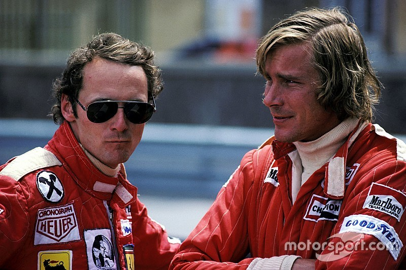
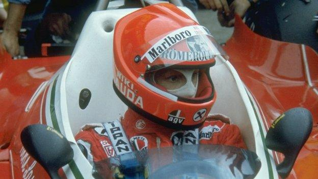
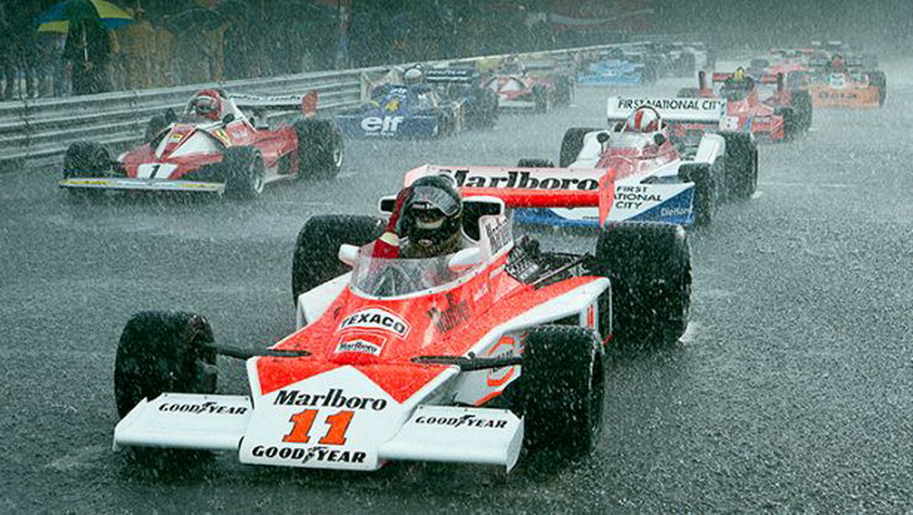

A maior rivalidade da década de 70. Um duelo entre a lógica implacável do austríaco Niki Lauda e o espírito indomável e boêmio do britânico James Hunt. Uma história de superação, tragédia e um respeito profundo que transcendia as pistas.

Niki Lauda (o "Rato") era metódico e focado em engenharia. James Hunt era o último dos românticos, pilotando por instinto e vivendo cada dia como se fosse o último.
Apesar das trocas de farpas na imprensa, eram amigos próximos que dividiam apartamentos no início da carreira. Eles se forçavam a ser melhores a cada GP.

Após quase morrer queimado em Nürburgring, Lauda chocou o mundo ao voltar ao cockpit da Ferrari apenas seis semanas depois. Com bandagens embebidas em sangue, ele enfrentou a dor para não deixar Hunt vencer o título sem luta.
James Hunt admitiu que a coragem de Niki era algo que ele nunca conseguiria igualar, tornando a disputa de 1976 a mais emocionante da história.

Debaixo de um dilúvio, Lauda provou que era o mestre da sua própria vida ao abandonar a corrida por segurança. Hunt seguiu em frente, lutando contra pneus delaminados e visibilidade zero.
James terminou em terceiro e sagrou-se campeão mundial. Ao saber da notícia, sua primeira reação foi procurar por Niki. O título era de Hunt, mas o respeito era eterno e mútuo.
Enquanto Hunt se aposentou cedo, Lauda voltou anos depois para ser tricampeão. Diferentes em tudo, mas unidos pela mesma velocidade.